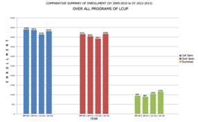
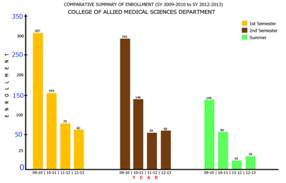
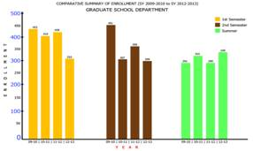
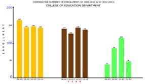

Paper Title :
Factors Affecting Retention and Attrition Rates of La Consolacion University Philippines:
Examining Students’ Experiences
Abstract
The main objective of the study is to determine the factors affecting retention and attrition rates at La Consolacion University Philippines. Findings of the study revealed that LCUP experienced a downtrend in enrolment from school year 2009-2010 to 2012-2013 during the 1st and 2nd semesters of the school years 2009-2010, 2010-2011, and 2011-2012, respectively. However, during the school year 2012-2013, LCUP gained an additional of 183 students in the first semester, 252 in the second semester, and 112 in summer, respectively. The identified factors affecting attrition and retention rates such as the first year transition, academic advising, career planning and placement, learning assistance/academic support, mentoring, faculty development, financial aid, co-curricular programs and other services if not given enough attention could have a major effect in the enrolment statistics of the university. Hopes for higher retention rates are reliant on the concerted efforts between academic and administrative units, as well as on individual faculty members and academic support group.
Keywords- Attrition rate, retention rate, enrolment downtrend, La Consolacion University Philippines, students’ experience.
Author
Sr. Editha S. Zerna, OSA, Ph.D.
LaConsolacion University Philippines
Malolos City, Bulacan Philippines
Dr. Reynaldo C. Cruz
LaConsolacion University Philippines
Malolos City, Bulacan Philippines
Dr. Alvin V.Nuqui
LaConsolacion University Philippines
Malolos City, Bulacan Philippines
Paper Transcript of Paper Titled :
Factors Affecting Retention and Attrition Rates of La Consolacion University Philippines:
Examining Students’ Experiences
Factors Affecting Retention and Attrition
Rates of La Consolacion University Philippines: Examining Students’ Experiences
Sr. Editha S. Zerna, OSA, Ph.D.
LaConsolacion University Philippines
Malolos City, Bulacan Philippines
Dr. Reynaldo C. Cruz
LaConsolacion University Philippines
Malolos City, Bulacan Philippines
Dr. Alvin V.Nuqui
LaConsolacion University Philippines
Malolos City, Bulacan Philippines
Abstract—The main objective of the study is to determine the factors affecting retention and attrition rates at La Consolacion University Philippines. Findings of the study revealed that LCUP experienced a downtrend in enrolment from school year 2009-2010 to 2012-2013 during the 1st and 2nd semesters of the school years 2009-2010, 2010-2011, and 2011-2012, respectively. However, during the school year 2012-2013, LCUP gained an additional of 183 students in the first semester, 252 in the second semester, and 112 in summer, respectively. The identified factors affecting attrition and retention rates such as the first year transition, academic advising, career planning and placement, learning assistance/academic support, mentoring, faculty development, financial aid, co-curricular programs and other services if not given enough attention could have a major effect in the enrolment statistics of the university. Hopes for higher retention rates are reliant on the concerted efforts between academic and administrative units, as well as on individual faculty members and academic support group.
Keywords- Attrition rate, retention rate, enrolment downtrend, La Consolacion University Philippines, students’ experience
Introduction
Retention among students has become a challenging concern for the academic community. It refers to students’ continued study until successful completion (Fowler and Luna, 2009) and is one of the most widely studied areas in higher education (Powell, 2009).
Private higher education institutions (HEIs) are aware of the importance of student retention issue because students’ experience is a tangible demonstration of the validity and meaning of institutional mission (Scholder and Maguire, 2009). Hence, soliciting feedbacks from students is necessary to assess retention factors about specifics areas of the institution like value, resources, academics, faculty, advising/supporting services, social life, extracurricular activities, educational goals and preparation for the future.
There are variety of reasons that the higher education is increasingly emphasizing persistence rates covering financial demands, reputation enhancements, and perceived advantages in admission. However, the student persistence in national rate and graduation has shown little change over the past decade (NCES, 2005). Some institutions are starting to assign responsibility for retention to the chief enrollment officer, whereas others assign this responsibility to student affairs staff (Scholder and Maguire, 2009).
Alkandari (2008) explained that achieving personal aspiration and academic merit, getting jobs, acquiring social class, getting jobs, developing skills, high standard status of the school, and feeling that one belongs to the university are factors affecting students’ retention; and to work toward increasing student retention in higher education institutions, administrators have the accountability of providing students with an effective academic and non-academic environment that will positively motivate students to persist with their studies and achieve desirable progress in developing their personalities. This was affirmed by Madgett and Belanger (2008) that there are numerous determinants influencing a student’s decision to stay or to drop out: economic factors, academic difficulties and dissatisfaction, low GPA, poor advising and teaching, family responsibilities, personal problems, enrollment at another school, and dissatisfaction with residence living; and these indicators influence the portion of the student’s satisfaction with linkages relating to a student’s sense of belonging and participation in a quality education (Elliot, 2002). Swail et al., (2003) asserted that social factors like financial issues, attitude toward learning, attitude toward others, educational legacy, religious setting, cultural values, goal commitment, family and peer influence and social routine are essential in increasing students’ persistence. Extensive and steady evidence supports that students’ grades, achievement, or academic performance have an overpowering impact on persistence; and students from families with larger incomes tend to persist more than students from families with lower incomes (St. John, et al., 2001). In order to reduce the income constraints on student educational pursuits, financial aid has played a critical role. In the research of Bettinger (2004), it was revealed that the receipt of financial aid had a positive impact on students’ persistence, especially when aid is in the form of grants or scholarships.
Strauss and Volkwein (2004) pointed out that behavioral intentions, attitudes toward higher education, goal and institutional commitments, social and academic interactions, and institutional “fit” are qualitative aspects of students’ attrition.
Needless to say, students’ satisfaction is a key component of demonstrating institutional effectiveness; and students who stay in school despite relatively low levels of satisfaction are not only at risk of becoming less than supportive alumni, but may also actually be proactive in spreading their negative opinions of the institution. Lau (2003) explained that students who are satisfied with the formal and informal academic and social systems in a college or university tend to stay in school; on the other hand, students who have unconstructive interactions and experiences have a tendency to turn into disillusioned with college, withdraw from their peers and faculty members and ultimately from the institution. In fact, Bay and Daniel (2001) stressed that institutions of higher education should not consider the student as the “customer” instead as “collaborative partner.” Viewing the student as a partner rather than a customer allows for the detection of a multifaceted relationship between the student and the institution and may be effective in informing efforts to improve that connection not only during recruitment, but during the entire period in which the student is enrolled and beyond.
It is for this reason that the factors affecting retention and attrition rates at LCUP utilizing students’ experiences was evaluated in aid of drawing policy implications that will improve the program viability of the university.
Related Literature
In the study of Hsu and Bailey (2011), they found that a significantly higher percentage of students who said they would not come back the following semester indicated that their mentor was less willing to answer their queries and were much less satisfied with the support from their advisor. Furthermore, other factors like having intricacies with some aspects of college life such as being gone from home, adjusting to dorm life, and encountering challenges in maintaining relationships with persons from home were the indicators of retention for the students. Research by Hendel (2007) showed that the first year seminar did not increase the probability of retention; only high school rank was a significant contributor of freshmen to sophomore retention. Same study revealed that the students who participated in the first year discussion group had experienced a greater sense of community during their first year which may contribute to retention into a second year.
Waning number of students returning to school usually results in larger financial loss and a lower graduation rate for institution and might affect the perception of the parents, students, stakeholders, legislators’ vision of the institution (Lau, 2003). Consequently an effective program for student retention is through providing them with a meaningful learning environment, so that these students will become connected to the institution by developing a sense of belonging within the student body. Fowler and Boylan (2010) recommended that improving student success and retention may be achieved if developmental educators also address non academic and personal factors related to student success like clear student guidelines, integrating first year transition coursework, intrusive academic advising to treat the non academic and personal factors, and traditional developmental education coursework and tutoring to address academic factors. Lotkowski, et al., (2004) agree that students may be at higher risk of dropping out if only the academic factors are addressed. Students’ academic achievement is central to the institution because it demonstrates the accomplishment of its mission to educate and prepare students for life beyond college (Kim, et al., 2010). Drop out may point to an institution’s lack of awareness to meeting student needs, a failure to prepare and support student progress, also, in realistic sense, create a financial debit to the institution by losing a paying consumer (Kim, et al., 2010). On the other hand, according to Mbuva (2011), sympathetic staffs, focusing on students’ individual and academic needs, and positive modeling, improve student retention. Some universities have integrated “freshman seminar” or “experience” courses into their academic programs to augment retention of first year students (Braunstein, et al., 2006).
The purpose of this study was to examine student retention in the basic education department, college programs and graduate school courses in La Consolacion University Philippines, how the university retained students.
Ease of Use
The main objective of the study is to determine the factors affecting retention and attrition rates at La Consolacion University Philippines. Specifically, it aims to:
Analyze the enrolment trend from 2009-2010 to 2012-2013 across departments;
Identify the factors affecting student attrition and retention rates;
Materials and Methods
Methods and Techniques. The study utilized the descriptive evaluation method of research in determining the factors affecting students’ retention and attrition rates at La Consolacion University Philippines. The students were asked to identify factors that would have a major effect on their decision to leave (attrition) and factors that would have a major contribution of staying (retention) at LCUP. Nieswiadomy (2008) contends that it is an investigation in which self-report data are collected from samples with the purpose of describing populations on some variable or variables of interest.
Population and Sample of the Study. The respondents of the study were 684 students of the nine academic departments of La Consolacion University Philippines. The respondents in different departments are as follows: Graduate School (39), College of Allied Medical Sciences (46), College of Liberal Arts (20), College of Education (12), College of Information, Technology and Education (59), College of Hospitality Management (83), College of Business Administration76), Alternative Learning System70), and Basic Education Department (279).
Simple random sampling through the use of a table of random numbers was utilized in selecting the respondents. According to Nieswiadomy (2008), it is a type of probability sampling that ensures each element of the population has an equal and independent chance of being chosen. The researcher first assigned a number to each element of the accessible population. The table of random numbers was entered at an arbitrary or random starting point. Selection was made by closing the eyes and blindly point to a number in the table until the targeted sample size was reached.
Instrument of the Study. The instrument that was used in the study was adopted from ACT (2010) National Survey on “What Works in Student Retention”. The instrument is composed of two parts. Part one shows the factors affecting student attrition at LCUP. The second part depicts the on-campus retention practices in terms of first year transition, academic advising, career planning and placement, learning assistance/academic support, mentoring, faculty development financial aid, co-curricular services/programs for specific student, and other activities/programs.
Data Gathering Procedures. The mode of data gathering used was the questionnaire method. Each of the respondents was given a close-ended structured set of questions.
In gathering the data, the researcher carried out the following procedures:
1.A letter was sent to the University President asking permission to conduct the study.
2.With the approval of the President, the researcher distributed the questionnaire to the identified Academic Departments.
3.The researcher collected the questionnaires from the respondents and checked whether all the questions were answered.
4.The data collected were tabulated and processed using Statistical Packages for Social Sciences.
Data Processing and Statistical Treatment. To analyze and interpret the data gathered, the following statistical measures were used:
1.The enrolment trend was presented using frequency counts using bar graphs illustrations.
2.The industrial and solid waste management practices was quantified using frequency counts and weighted mean and qualitatively analyzed using the following scale.
Scale |
Range |
Descriptive Equivalent |
|
On Attrition |
On Retention |
||
4 and 5 |
3.5 – 5.0 |
Major Effect on Attrition |
Major Contribution on Retention |
3 |
2.5 – 3.49 |
Moderate Effect on Attrition |
Moderate Contribution to Retention |
1 and 2 |
1.0 – 2.49 |
Little or No Effect on Attrition |
Little or No Contribution to Retention |
Results and Discussion
Enrollment Rate from School Year 2009-2010 to 2012-2013
Increasing students’ retention is becoming a significant issue in most higher education institutions, specifically for the institutions that face an enrolment downtrend. Barefoot (2004) stated that most private universities face a higher rate of student attrition as seen in their enrolment statistics. For some universities, this issue may negatively affect their economic level, whereas students’ fees and tuitions increase the financial revenue of the institution.
A closer look at the enrolment trend of LCUP from school year 2009-2010 to 2012-2013 would show that the school experienced enrolment downtrend during the 1st and 2nd semesters of the school years 2009-2010, 2010-2011, and 2011-2012, respectively. During the school year 2012-2013, LCUP gained an additional of 183 students in the first semester, 252 in the second semester, and 112 in summer, respectively.
Further analysis of the enrolment statistics in Figures 2, 3, and 4 revealed that downtrend of enrolment is very evident in the three colleges namely College of Allied Medical Sciences, College of Education, and Graduate school department.

Figure 1. Enrolment statistics of LCUP from SY 2009-2010 to 2012-2013

Figure 2.Enrolment statistics of the College of Allied Medical Sciences

Figure 3.Enrolment statistics of the Graduate School Department

Figure 4. Enrolment statistics of the College of Education
One of the hypothesized causes of downtrend in enrolment is the inability of the university to retain students. To work toward increasing student retention, administrators have the responsibility of providing students with an effective academic and non-academic environment that will positively motivate students to persist with their studies and achieve desirable progress in developing their personalities. Providing students with multiple and effective services is a significant element to increase student retention.
Factors Affecting Attrition Rates at LCUP
Elliott (2002) discovered that there are several determinants influencing students’ decision to drop-out such as but not limited to economic factors, enrollment at another school, academic difficulties, family responsibilities, personal problems, dissatisfaction with residence living, academic dissatisfaction, low GPA, and poor advising or teaching.
In the case of La Consolacion University Philippines, students expressed several possible reasons of leaving the institution. As seen in Table 1, students identified top 10 factors that will have a major effect on the attrition rate at LCUP. These indicators if not well provided or attended to would also have a major effect in the enrolment statistics of the university. Emerged as top reasons of leaving the school are unmet students’ educational aspirations and goals (3.67) and underdeveloped students’ study skills (3.67). The aspiration to obtain a degree is perceived as a significant contributing factor that affects the students’ decision to persist in their studies; this reflects that the students firmly believed a university degree was crucial to achieve their purpose in life following their education. This finding was supported by Watson, Johnson, and Austin (2004), who stated that some first year students reported that they continued their education to achieve personal inspiration. Students considering dropping out are usually having problems integrating into academic and/or social systems. In addition, students who are unsure and do consider leaving their universities are not confident in their decisions to undertake their studies.
Moreover, study skills are a vital factor in increasing academic integration as well as academic performance. According to Swail (2003), if the student has a full load (five courses), he/she should spend at least one hour of homework for every hour in the classroom. It was found out that studying for at least 15 hours (compared to studying less) have a greater effect on students’ GPA, thereby increasing his/her persistence. The function of the deans and professors is important in ensuring that students are given enough homework for every coursework to ensure that students are academically engaged.
Non-provision of the following may result in possible dropping out of LCUP students: student engagement opportunities in the classroom (3.64), quality of interaction between faculty and students (3.63), and adequate academic/learning support services (3.61). This is an area where the satisfaction of students to the quality of services being offered by teaching and non-teaching personnel are expressed in terms of productive and quality interaction between students and LCUP personnel namely the professors and deans, as well as the frontliners from the student services, guidance, admission, finance, registrar, among other. Although most students are initially placed into developmental education courses through the scores earned on placement test, Boylan (2009) argued that tests evaluate only their academic (cognitive) abilities. Another important aspect of school service is the non-academic (affective) factors especially for students with weak academic skills.
Indicators |
WM |
Interpretation |
Student’s educational aspirations and goals |
3.67 |
Major Effect |
Student’s study skills |
3.67 |
Major Effect |
Student engagement opportunities in the classroom (active learning) |
3.64 |
Major Effect |
Quality of interaction between faculty and students |
3.63 |
Major Effect |
Adequate academic/learning support services |
3.61 |
Major Effect |
Level of academic advisors’ concern for students |
3.59 |
Major Effect |
Students’ personal coping skills |
3.58 |
Major Effect |
Accuracy of information provided by academic advisors |
3.58 |
Major Effect |
Level of certainty about career goals |
3.58 |
Major Effect |
Level of emotional support from family, friends, and significant others |
3.58 |
Major Effect |
TABLE 1: Top 10 Factors Affecting Attrition Rate at LCUP
It may be worthwhile to note that non-existence of the following provisions may contribute a major effect on students’ attrition: level of academic advisors’ concern for students, students’ personal coping skills, accuracy of information provided by academic advisors, level of certainty about career goals, and level of emotional support from family, friends, and significant others.
Factors Affecting Retention Rates at LCUP
The social structure is influenced by some of the following factors that are crucial in increasing students’ retention (Swail et al, 2003): financial issues, educational legacy, attitude toward learning, religious background, maturity, social coping skills, communication skills, attitude toward others, cultural values, expectations, goal commitment, family influence, peer influence and social lifestyle. This study assessed the factors affecting students’ retention in the light of the following dimensions: first year transitions, academic advising, career planning and placement, learning assistance/academic support, mentoring, faculty development, financial aid, co-curricular services/programs for specific student sub-populations, and other activities/programs.
First year Transition. Some of the influences affecting students’ retention are linked to positive occurrences and experiences during the first year after enrolment for which organizational can be demonstrated through an institution’s policies and programs (Braxton and McClendon, 2001). It may be gleaned from the data in table 2 that freshman seminar (3.78), summer orientation (3.71), and parent/family orientation are the identified top three factors affecting students’ retention at LCUP. These activities are very helpful in alleviating the social, emotional and academic strains experienced by students. Seminar and orientation given to students when done religiously can better manage the first university experience, particularly for higher-risk students. As noted by Belanger, Mount and Wilson (2002), happy students are propagators of good news while unhappy students have a propensity to drop out and to affect institutional image and finances negatively.
Indicators |
WM |
Interpretation |
|
3.78 |
Major Contribution |
|
3.71 |
Major Contribution |
|
3.69 |
Major Contribution |
TABLE 2: First Year Transition (Top 3 Factors Affecting Retention)
Academic Advising. According to Vander Schee, 2007), academic advising is a “process –oriented relationship” between the student and advisor in which the main focus is the student’s ultimate goals. Advising focuses on the growth of the student, instilling an “awareness of the relationship between education and life, the ability to set realistic academic career goals as well as program to achieve them, and an awareness of life extending beyond the college years. The student uses the advisor as a resource whereby the students and advisor act in a problem solving role together. The data in Table 3 show that in terms of academic advising, students identified the top three major contributory factors to retention rates at LCUP to wit: training for faculty academic advisors (3.93), values assessment (3.90), and personality assessment (3.89). The relationship being built in academic advising also focuses on “academic competence, personal connection, and increasing or validating life purpose,” all of which are related with academic success. (Wnder and Wilkie, 2000).
Indicators |
WM |
Interpretation |
|
3.93 |
Major Contribution |
|
3.90 |
Major Contribution |
|
3.89 |
Major Contribution |
TABLE 3: Academic Advising (Top 3 Factors Affecting Retention)
Career planning and placement. In terms of career planning and placement, students identified internships (4.11), cooperative education (3.98), and career workshops or courses (3.94) as top three major contributory factors to their persistence in the university.
Indicators |
WM |
Interpretation |
|
4.11 |
Major Contribution |
|
3.98 |
Major Contribution |
|
3.94 |
Major Contribution |
TABLE 4: Career Planning and Placement (Top 3 Factors Affecting Retention)
Most students pointed out that they are looking to develop the skills through internships that are needed for the specific job to serve the society in different fields. Hence, further strengthening the career planning and placement program at LCUP may be considered.
Learning assistance/academic support. The data in table 5 reveal that students will stay in the school if there is presence of learning assistance/academic support such as but not limited to library orientation, workshop, and/course (3.96), organized student study groups (3.87), and summer bridge program (3.84).
Indicators |
WM |
Interpretation |
|
3.96 |
Major Contribution |
|
3.87 |
Major Contribution |
|
3.84 |
Major Contribution |
TABLE 5: Learning Assistance/Academic Support (Top 3 Factors Affecting Retention)
Mentoring. Mentoring was also considered as one of the factors affecting students’ retention in the university. Peer mentoring (3.87), faculty mentoring (3.75), and staff mentoring (3.73) were identified to be major contributory factors affecting retention.
Indicators |
WM |
Interpretation |
|
3.87 |
Major Contribution |
|
3.75 |
Major Contribution |
|
3.73 |
Major Contribution |
TABLE 6: Mentoring (Top 3 Factors Affecting Retention)
Providing students with a mentoring service is also important for the students’ academic progress. Tait (2004) found that mentors have a priceless role in student retention and living-learning centers have a affirmative impact on students’ persistence.
Faculty Development. In terms of faculty development, the use of technology in communicating with students highly contributed to students’ retention as indicated by a weighted mean value of 4.04. This was followed assessment of students’ performance (3.97), and instructional or teaching techniques (3.95), respectively.
Indicators |
WM |
Interpretation |
|
4.04 |
Major Contribution |
|
3.97 |
Major Contribution |
|
3.95 |
Major Contribution |
TABLE 7: Faculty Development (Top 3 Factors Affecting Retention)
In addition, passing required credits would greatly motivate students to continue their studies. This study suggests the importance of quality instruction and valid assessment techniques that meet different intellectual skills of the students. For instance, some students prefer essay exams; however, some may prefer objective exams, which include multiple choice or true and false questions.
Further, the use of varied and innovative teaching and learning methodologies is afactor in developing intellectual skills. A good faculty member should be an educator who understands students’ personal differences and use teaching methods that positively affect student learning and success.
Financial Aid. In terms of financial aid, major contributions to students’ retention are pre-enrollment financial advising (3.76), short-term loans (3.61), and workshops in money management (3.57)
Indicators |
WM |
Interpretation |
|
3.76 |
Major Contribution |
|
3.61 |
Major Contribution |
|
3.57 |
Major Contribution |
TABLE 8: Financial Aid (Top 3 Factors Affecting Retention)
Co-curricular Services/Programs for Specific Student Sub-populations. Students are in agreement that if the university provides co-curricular programs for specific students’ sub-populations such as those activities for female students (3.99), international students (3.96), and honor students (3.89), there is a greater chance that they will stay in the university.
Indicators |
WM |
Interpretation |
|
3.76 |
Major Contribution |
|
3.61 |
Major Contribution |
|
3.57 |
Major Contribution |
TABLE 9: Co-curricular Services/Programs for Specific Student Sub-popular (Top 3 Factore Affecting Retention)
Other Activities/Programs. Other school activities such student leadership development (3.86), motivation and goal setting (3.79), and health and wellness programs are major contributory factors to students’ retention at LCUP.
Indicators |
WM |
Interpretation |
|
3.86 |
Major Contribution |
|
3.79 |
Major Contribution |
3.78 |
Major Contribution |
TABLE 10: Other Activities/Programs (Top 3 Factors Affecting Retention)
In addition to the previous factors that contribute to increasing students’ retention at the university, some students indicated that attending that attending different kinds of extracurricular activities, such as exhibitions, seminars, poetry presentation, cultural weeks and the like, encouraged their retention. Since the students may spend their free time attending extracurricular activities, this finding suggest that the university administration should consider the importance of increasing different activities that interest the students.
Maguire et al (2008) argued that students who persist at a school despite relatively low levels of satisfaction are not only at risk of becoming less than supportive alumni, but may also actually be proactive in spreading their negative opinions of the institution. Should they do so via the Internet with all its potential for viral amplification, the damage to the schools’ reputation and future recruitment efforts could be substantial. To forestall such an outcome, the school would do well to continually monitor student satisfaction levels and take steps that improve those levels, especially on behalf of students in this category.
Conclusions
On the basis of the findings of the study, the following conclusions were drawn:
- Downtrend of enrolment at LCUP is very evident and must be considered crucial to program viability and school operations.
- The anticipated factors affecting attrition and retention rates at LCUP if not given enough attention could have a major effect in the enrolment statistics of the university
- Hopes for higher retention rates are reliant on the concerted efforts between academic and administrative units, as well as on individual faculty members and academic support group.
Recommendations
Certainly, there must be more than one way to help students stay in school. Specific ways of helping the students in school are the following:
• Make sure students have goals they are working toward. Upon school admission, they should expect that they will graduate and get employed after acquiring necessary life skills from the school. They should have career goals and they need to see staying in school and graduating as essential to their future.
• Make sure that school is a positive experience for students. It should not be all negative, with failures or redirection. Monitor students closely, and, if they are struggling with behavior or academics, intervene early. Make sure that there is frequent communication between the parents and the school to ensure that students receive extra support. Also, make sure that they are set up for positive experiences and that those positives are highlighted.
• Focus on early intervention. If a student starts to struggle, make sure that they get support right away, because early intervention is crucial to successful intervention.
• Help the students to graduate on time. This requires avoiding holding them back. There are times when a student should fail. For example, in high school, they will have to retake a specific course if they fail it. However, retaining students for immaturity or for not having the skills at a young age should be avoided. Research shows that, after just a few years, the students who were held back are no further ahead than similar students who were promoted. There are too many alternatives, like extra classroom support and individual tutoring to justify holding someone back.
References
Bay, D. & Daniel, H. (2001). The student is not the customer – an alternative perspective. Journal of Marketing For Higher Education, Vol. 11
Bettinger, E., (2004). How financial aid affects persistence. NBER Working Paper No. W10242.
Elliot, K. M. (2002). Key Determinants of student satisfaction. Journal of College Student Retention, 4 (3)
Fowler, M., & Luna, G. (2009). High school and college partnerships: credit-based transition programs. American Secondary Education, 38 (1), doi: 1898877321
Hendel, D. D. (2007) Efficacy of participating in a first-year seminar on student satisfaction and retention. Journal of College Student Retention, 8
Kim, et al., (2010). Personal factors impacting college student success: constructing college learning effectiveness inventory. College Student Journal, 44 (1), doi: 1984269161
Lotkowski, V. A. et al., (2004). The role of academic and no-academic factors in improving collegeretention: act policy report. Retrieved fromhttp://www.act.org/path/policy/pdf/college_retention.pdf.
National Center for Education Statistics, (2005). Statistical analysis report 2005-156.
Powell, P. (2009). Retention and writing instruction: implication for access and pedagogy. College Composition and Communication, 60 (4), doi: 1775753881.
St. John, et al., (2001). Aptitude vs. merit: What matters in persistence. The Review of Higher Education, 24.
Strauss, L. C., and Volkwein, J. F., (2004). Predictors of student commitment at two-year andfour-year institutions. Journal of Higher Education, 75 (2).
Swail et al., (2003). Retaining minority students in higher education. ASHE-Eric HigherEducation Report.